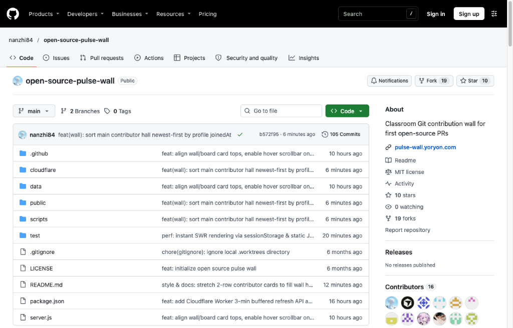
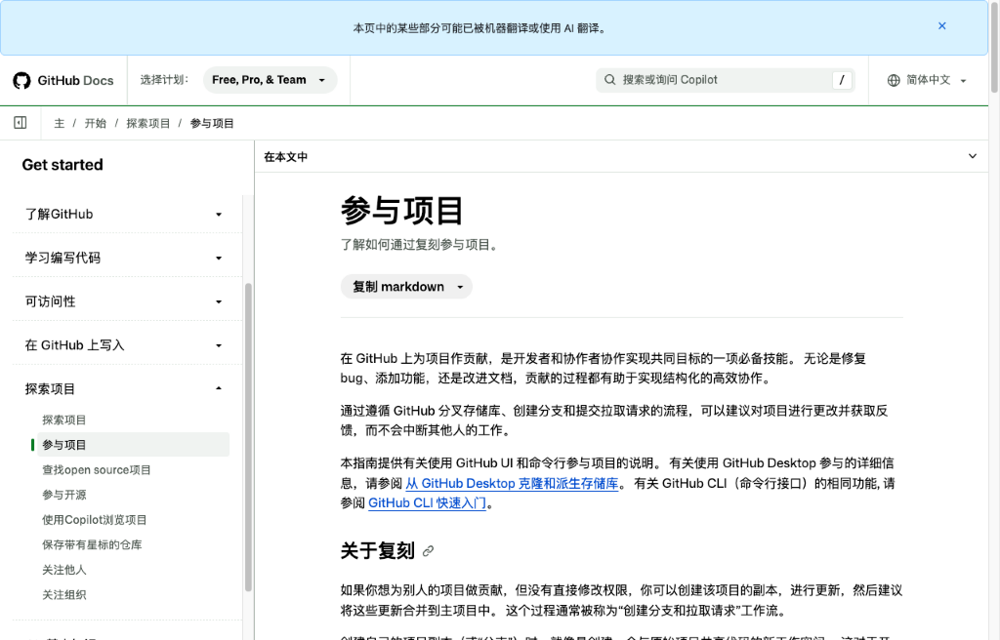
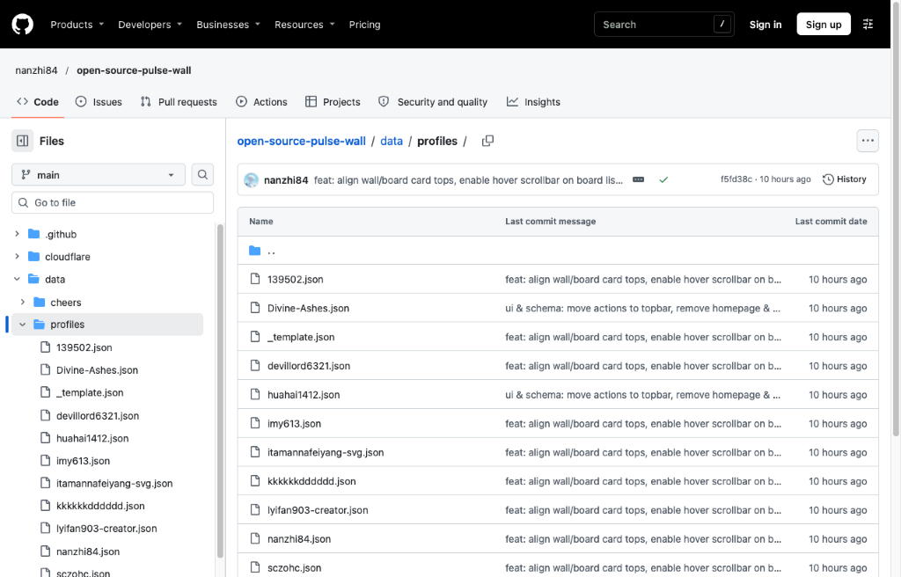
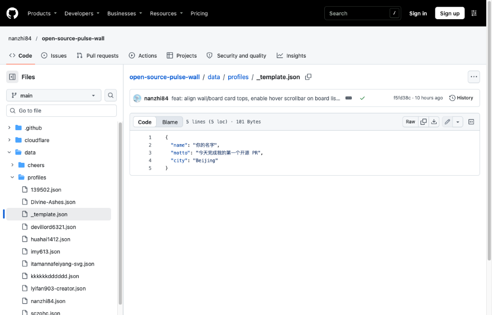
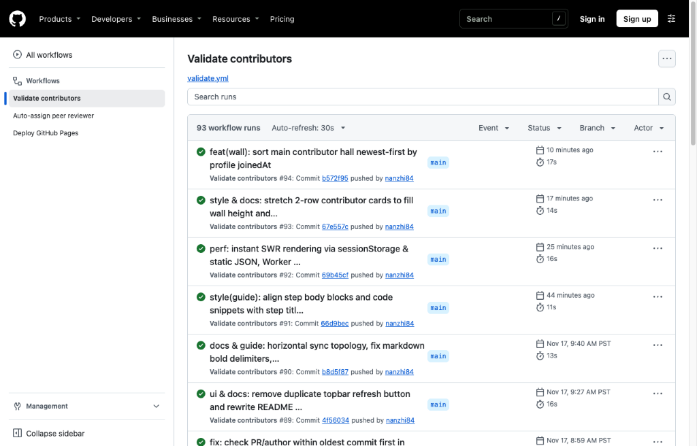
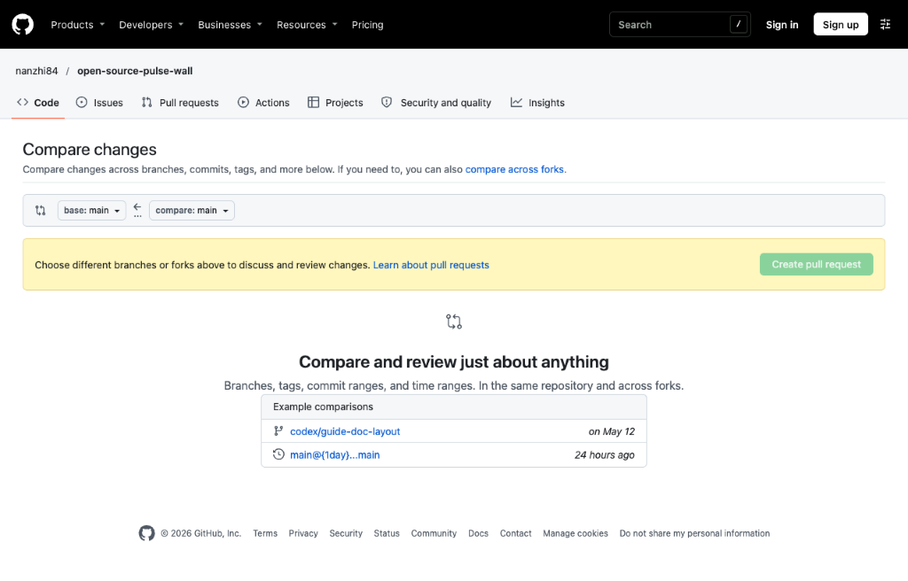
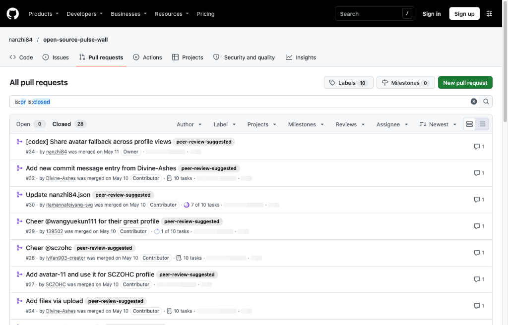
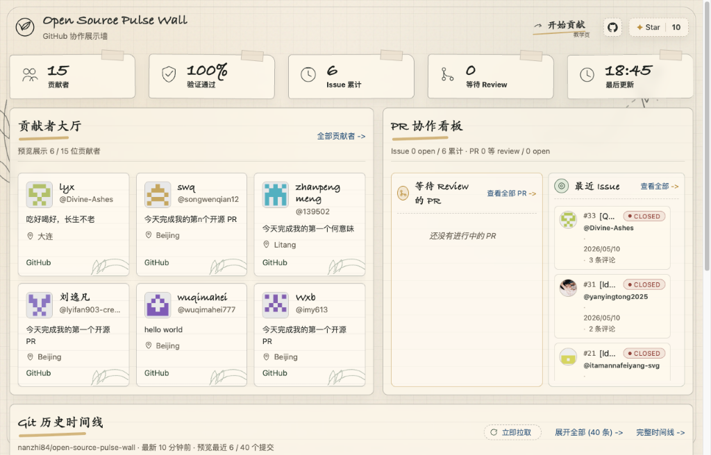
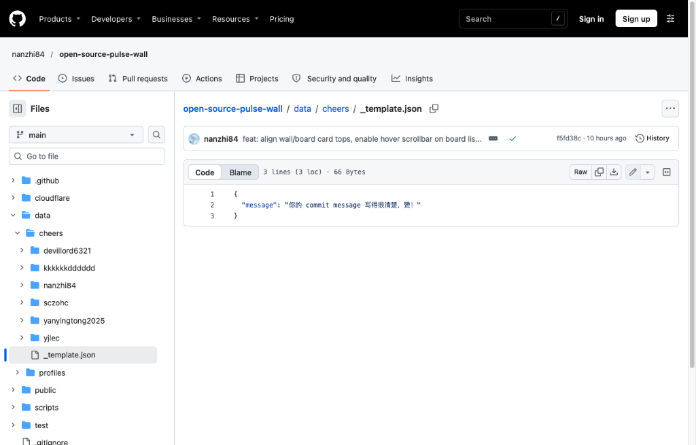

name
你的名字或昵称（必填，最多 40 字，不要保留「你的名字」）。
先在 GitHub 上点击右上角 Fork 把主仓库复制一份到你的账号下，再将你自己的 Fork 克隆到本地，并把主仓库添加为 upstream 以便后续同步最新代码。
git clone https://github.com/your-github-id/open-source-pulse-wall.git
cd open-source-pulse-wall
git remote add upstream https://github.com/nanzhi84/open-source-pulse-wall.git
不要直接在 main 分支上修改。每次贡献都切出独立分支，方便发起 Pull Request 与后续同步主干。
git checkout -b add-your-profile分支名也可以写成 feat/your-name-profile，表达清楚意图即可。

复制模板文件，文件名改成你的 GitHub 用户名小写。比如你的用户名是 octocat，路径就是 data/profiles/octocat.json。
cp data/profiles/_template.json data/profiles/your-github-id.json
data/profiles 目录存放每位贡献者的个人卡片 JSON。
_template.json 生成你自己的文件（仅含 name、motto、city 三个字段），不要直接改动模板本身。打开你复制出来的 JSON 文件，填入自己的内容。注意保留英文双引号、冒号以及前两行末尾的英文逗号。
{
"name": "你的名字",
"motto": "今天完成我的第一个开源 PR",
"city": "Beijing"
}name你的名字或昵称（必填，最多 40 字，不要保留「你的名字」）。
motto一句话介绍或座右铭，卡片主视觉会直接展示（必填，最多 120 字）。
city所在城市或课堂位置，中英文皆可（选填，最多 40 字）。
@用户名无需手填 github 与 avatar——系统会自动读取提交该文件的 PR 贡献者账号与 GitHub 头像。
提交前先在终端跑一遍校验脚本，检查所有个人卡片与寄语 JSON 是否符合规范。如果报错，按终端提示的文件名与字段修改即可。
npm run validate本项目零第三方依赖，无需运行 npm install，只要本机装有 Node.js 18+ 即可直接执行。发起 PR 后，GitHub Actions 也会自动运行同一条校验命令。

Validate contributors 工作流会在每次 PR 提交时自动运行 npm run validate。校验通过后，把你的文件提交到分支并推送到自己的 origin，随后在 GitHub 页面向主仓库发起 Pull Request。
git add data/profiles/your-github-id.json
git commit -m "feat: add my profile"
git push origin add-your-profile打开 GitHub 会自动弹出 Compare & pull request 提示条；若没看到，切到 Pull requests 标签页点击 New pull request 选择你的分支即可。

nanzhi84/open-source-pulse-wall 的 main。
PR 发出后，GitHub Actions 会自动运行 npm run validate。收到修改建议时继续在同一分支提交并 push，PR 会自动更新；合并后你的卡片就会点亮在展示墙左上角第 1 格。

等你的个人卡片合并后，同步一次主仓库，在 data/cheers/对方用户名/ 下新建一个独立 JSON 小文件送出鼓励。系统会自动根据你的 PR 识别寄语作者 @你的用户名，多人同时给同一位同学写寄语也完全不会冲突。
git fetch upstream
git checkout main
git merge upstream/main
git checkout -b cheer/octocat
mkdir -p data/cheers/octocat
cp data/cheers/_template.json data/cheers/octocat/cheer.json打开 data/cheers/octocat/cheer.json（文件名可任意命名），只需填写一行 message（80 字以内，无需填 from 或时间）：
{
"message": "你的 commit message 写得很清楚，赞！"
}npm run validate
git add data/cheers/octocat/cheer.json
git commit -m "feat: cheer @octocat"
git push origin cheer/octocat
data/cheers 目录下按目标同学用户名分文件夹存放独立寄语，模板仅含一行 message 字段。遇到报错先对照下面几项排查；仍未解决可直接在仓库提一个 Question Issue 求助。
JSON 语法不允许尾随逗号，最后一个字段末尾不要加逗号。
_template.json模板只用来 cp 复制，你的内容应写在自己的新文件里。
data/profiles寄语已改为独立文件，请放在 data/cheers/对方用户名/任意文件名.json，只填 message。
确认 base 是主仓库 nanzhi84/open-source-pulse-wall 的 main，而不是自己 Fork 的 main。
每次 commit 前先跑 npm run validate，一秒定位格式与目录拼写问题。
跑通命令后，推荐阅读专栏 Git From Scratch（从零理解 Git 底层），彻底看清 .git 里的对象与哈希指针。